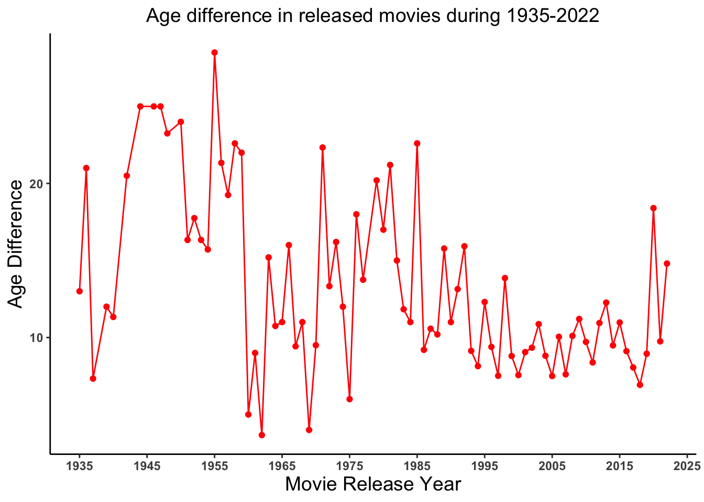
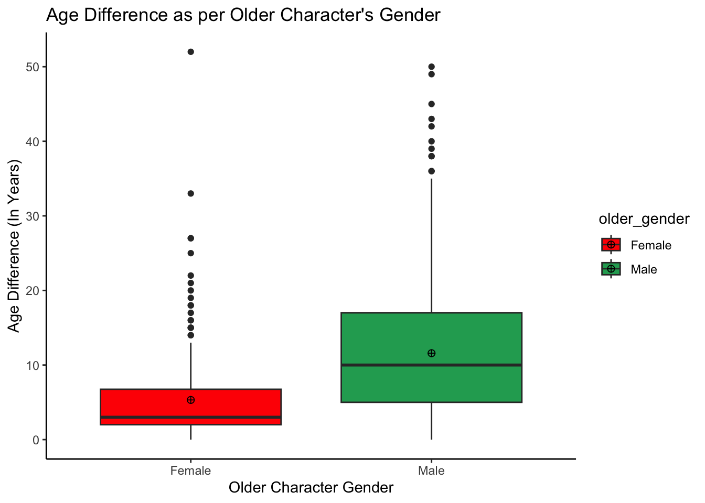
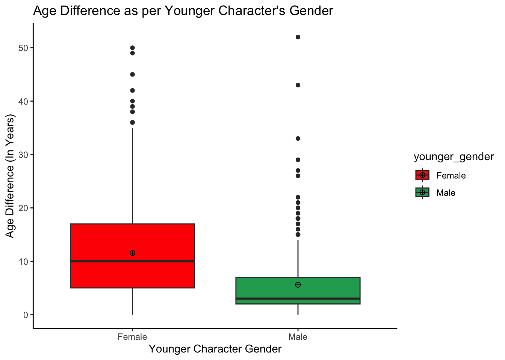

# Loading required packages
library(readr)
library(tidyverse)
library(dplyr)
library(naniar)
library(skimr)Tidy Tuesday Exercise
LOADING REQUIRED PACKAGES
LOADING AND LOOKING AT 2023 WEEK 7 TIDYTUESDAY DATA
# Loading the TidyTuesday data for week 7 of 2023 (02/14/2023)
tidydata <- read_csv('https://raw.githubusercontent.com/rfordatascience/tidytuesday/master/data/2023/2023-02-14/age_gaps.csv')Rows: 1155 Columns: 13
── Column specification ────────────────────────────────────────────────────────
Delimiter: ","
chr (6): movie_name, director, actor_1_name, actor_2_name, character_1_gend...
dbl (5): release_year, age_difference, couple_number, actor_1_age, actor_2_age
date (2): actor_1_birthdate, actor_2_birthdate
ℹ Use `spec()` to retrieve the full column specification for this data.
ℹ Specify the column types or set `show_col_types = FALSE` to quiet this message.glimpse(tidydata)Rows: 1,155
Columns: 13
$ movie_name <chr> "Harold and Maude", "Venus", "The Quiet American", …
$ release_year <dbl> 1971, 2006, 2002, 1998, 2010, 1992, 2009, 1999, 199…
$ director <chr> "Hal Ashby", "Roger Michell", "Phillip Noyce", "Joe…
$ age_difference <dbl> 52, 50, 49, 45, 43, 42, 40, 39, 38, 38, 36, 36, 35,…
$ couple_number <dbl> 1, 1, 1, 1, 1, 1, 1, 1, 1, 1, 1, 1, 1, 1, 1, 1, 1, …
$ actor_1_name <chr> "Ruth Gordon", "Peter O'Toole", "Michael Caine", "D…
$ actor_2_name <chr> "Bud Cort", "Jodie Whittaker", "Do Thi Hai Yen", "T…
$ character_1_gender <chr> "woman", "man", "man", "man", "man", "man", "man", …
$ character_2_gender <chr> "man", "woman", "woman", "woman", "man", "woman", "…
$ actor_1_birthdate <date> 1896-10-30, 1932-08-02, 1933-03-14, 1930-09-17, 19…
$ actor_2_birthdate <date> 1948-03-29, 1982-06-03, 1982-10-01, 1975-11-08, 19…
$ actor_1_age <dbl> 75, 74, 69, 68, 81, 59, 62, 69, 57, 77, 59, 56, 65,…
$ actor_2_age <dbl> 23, 24, 20, 23, 38, 17, 22, 30, 19, 39, 23, 20, 30,…skim(tidydata)| Name | tidydata |
| Number of rows | 1155 |
| Number of columns | 13 |
| _______________________ | |
| Column type frequency: | |
| character | 6 |
| Date | 2 |
| numeric | 5 |
| ________________________ | |
| Group variables | None |
Variable type: character
| skim_variable | n_missing | complete_rate | min | max | empty | n_unique | whitespace |
|---|---|---|---|---|---|---|---|
| movie_name | 0 | 1 | 2 | 43 | 0 | 830 | 0 |
| director | 0 | 1 | 3 | 31 | 0 | 510 | 0 |
| actor_1_name | 0 | 1 | 6 | 22 | 0 | 567 | 0 |
| actor_2_name | 0 | 1 | 7 | 27 | 0 | 647 | 0 |
| character_1_gender | 0 | 1 | 3 | 5 | 0 | 2 | 0 |
| character_2_gender | 0 | 1 | 3 | 5 | 0 | 2 | 0 |
Variable type: Date
| skim_variable | n_missing | complete_rate | min | max | median | n_unique |
|---|---|---|---|---|---|---|
| actor_1_birthdate | 0 | 1 | 1889-04-16 | 1996-06-01 | 1964-10-03 | 562 |
| actor_2_birthdate | 0 | 1 | 1906-10-06 | 1996-11-11 | 1974-07-30 | 640 |
Variable type: numeric
| skim_variable | n_missing | complete_rate | mean | sd | p0 | p25 | p50 | p75 | p100 | hist |
|---|---|---|---|---|---|---|---|---|---|---|
| release_year | 0 | 1 | 2000.80 | 16.37 | 1935 | 1997 | 2004 | 2012 | 2022 | ▁▁▁▆▇ |
| age_difference | 0 | 1 | 10.42 | 8.51 | 0 | 4 | 8 | 15 | 52 | ▇▃▂▁▁ |
| couple_number | 0 | 1 | 1.40 | 0.75 | 1 | 1 | 1 | 2 | 7 | ▇▁▁▁▁ |
| actor_1_age | 0 | 1 | 40.64 | 10.42 | 18 | 33 | 39 | 47 | 81 | ▂▇▅▂▁ |
| actor_2_age | 0 | 1 | 30.21 | 7.50 | 17 | 25 | 29 | 34 | 68 | ▇▇▂▁▁ |
DATA EXPLORATION
# Lets look at the number of unique movie names for the given years in data
length(unique(tidydata$movie_name))[1] 830# Lets look at the number of released movies for each year
table(tidydata$release_year)
1935 1936 1937 1939 1940 1942 1944 1946 1947 1948 1950 1951 1952 1953 1954 1955
2 1 3 1 3 2 1 1 1 4 1 3 4 3 7 2
1956 1957 1958 1959 1960 1961 1962 1963 1964 1965 1966 1967 1968 1969 1970 1971
3 4 5 2 2 4 3 5 4 5 1 7 1 3 2 3
1972 1973 1974 1975 1976 1977 1979 1980 1981 1982 1983 1984 1985 1986 1987 1988
3 5 6 1 1 4 5 1 5 6 6 1 5 5 7 5
1989 1990 1991 1992 1993 1994 1995 1996 1997 1998 1999 2000 2001 2002 2003 2004
9 6 7 13 15 14 36 18 35 28 50 34 38 50 38 38
2005 2006 2007 2008 2009 2010 2011 2012 2013 2014 2015 2016 2017 2018 2019 2020
34 40 46 47 44 28 34 34 30 33 40 44 35 40 20 5
2021 2022
8 5 # Lets look at the range of age for actor 1 and 2
tidydata$actor_1_age %>% range()[1] 18 81tidydata$actor_2_age %>% range()[1] 17 68# Lets look at the range of age difference
tidydata$age_difference %>% range()[1] 0 52DATA VISUALIZATION
VISUALIZING AVERAGE AGE DIFFERENCE OVER YEARS IN MOVIES
# Lets look at the trend of age difference in released movies over time
# Creating an object `avgage_year` having average age difference per year
tidydata_agegap <- tidydata %>% select(release_year, age_difference)
avgage_year <- tidydata_agegap %>% group_by(release_year) %>%
summarize_at("age_difference", mean) %>% ungroup()
# Plotting average age difference over years
avgage_year %>% ggplot() +
geom_line(aes(x = release_year, y = age_difference), color = "red")+
geom_point(aes(x = release_year, y = age_difference), color = "red")+
theme_classic()+
labs(x = "Movie Release Year", y = "Age Difference", title = "Age difference in released movies during 1935-2022") +
scale_x_continuous(breaks=c(1935, 1945, 1955, 1965, 1975, 1985, 1995, 2005, 2015, 2025)) +
theme(axis.text = element_text(face="bold"), plot.title = element_text(hjust = 0.5, size = 14),
axis.title = element_text(size = 14))
VISUALIZING AGE DIFFERENCE IN RELEASED MOVIES OVER YEARS BY OLDER AND YOUNGER CHARACTER GENDER
# Lets create an object `agediff_gender` representing older character's gender in the released movies using character_1_gender column
agediff_gender <- tidydata %>%
mutate(older_gender = case_when(
character_1_gender == "man" ~ "Male",
character_1_gender == "woman" ~ "Female"))
agediff_gender %>% ggplot(aes(x = older_gender, y = age_difference,
fill = older_gender)) +
geom_boxplot() +
stat_summary(fun = "mean", geom = "point", shape = 10, size = 2, color = "black") +
scale_fill_manual(values=c("red", "#22a861")) +
theme_classic() +
ggtitle("Age Difference as per Older Character's Gender") +
labs(x="Older Character Gender", y="Age Difference (In Years)") 
# Lets create an object `agediff_gender` representing younger character's gender in the released movies using character_2_gender column
agediff_gender <- tidydata %>%
mutate(younger_gender = case_when(
character_2_gender == "man" ~ "Male",
character_2_gender == "woman" ~ "Female"))
agediff_gender %>% ggplot(aes(x = younger_gender, y = age_difference,
fill = younger_gender)) +
geom_boxplot() +
stat_summary(fun = "mean", geom = "point", shape = 10, size = 2, color = "black") +
scale_fill_manual(values=c("red", "#22a861")) +
theme_classic() +
ggtitle("Age Difference as per Younger Character's Gender") +
labs(x="Younger Character Gender", y="Age Difference (In Years)") 
TEST STATISTIC
# Fitting a model to see if there exists an association between age difference and the gender of the older and younger characters
fit1 <- lm(age_difference ~ factor(character_1_gender), agediff_gender)
summary(fit1)
Call:
lm(formula = age_difference ~ factor(character_1_gender), data = agediff_gender)
Residuals:
Min 1Q Median 3Q Max
-11.586 -5.586 -1.586 4.414 46.682
Coefficients:
Estimate Std. Error t value Pr(>|t|)
(Intercept) 11.5855 0.2660 43.56 <2e-16 ***
factor(character_1_gender)woman -6.2678 0.6179 -10.14 <2e-16 ***
---
Signif. codes: 0 '***' 0.001 '**' 0.01 '*' 0.05 '.' 0.1 ' ' 1
Residual standard error: 8.158 on 1153 degrees of freedom
Multiple R-squared: 0.08194, Adjusted R-squared: 0.08114
F-statistic: 102.9 on 1 and 1153 DF, p-value: < 2.2e-16fit2 <- lm(age_difference ~ factor(character_2_gender), agediff_gender)
summary(fit2)
Call:
lm(formula = age_difference ~ factor(character_2_gender), data = agediff_gender)
Residuals:
Min 1Q Median 3Q Max
-11.530 -5.530 -1.591 4.470 46.409
Coefficients:
Estimate Std. Error t value Pr(>|t|)
(Intercept) 5.5907 0.5589 10.004 <2e-16 ***
factor(character_2_gender)woman 5.9391 0.6195 9.587 <2e-16 ***
---
Signif. codes: 0 '***' 0.001 '**' 0.01 '*' 0.05 '.' 0.1 ' ' 1
Residual standard error: 8.194 on 1153 degrees of freedom
Multiple R-squared: 0.07383, Adjusted R-squared: 0.07303
F-statistic: 91.92 on 1 and 1153 DF, p-value: < 2.2e-16